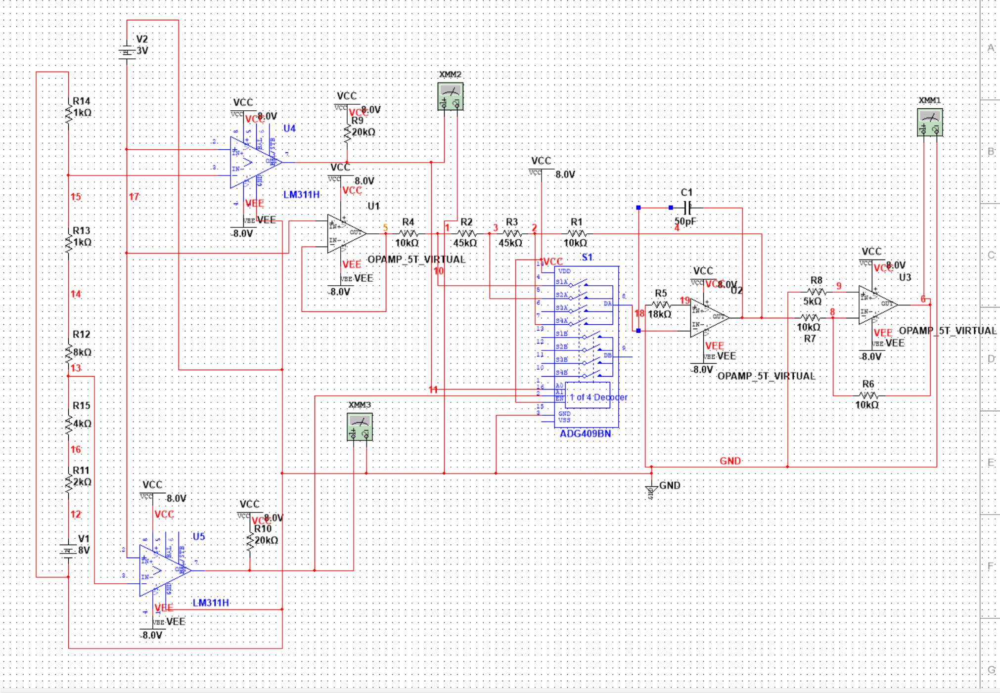
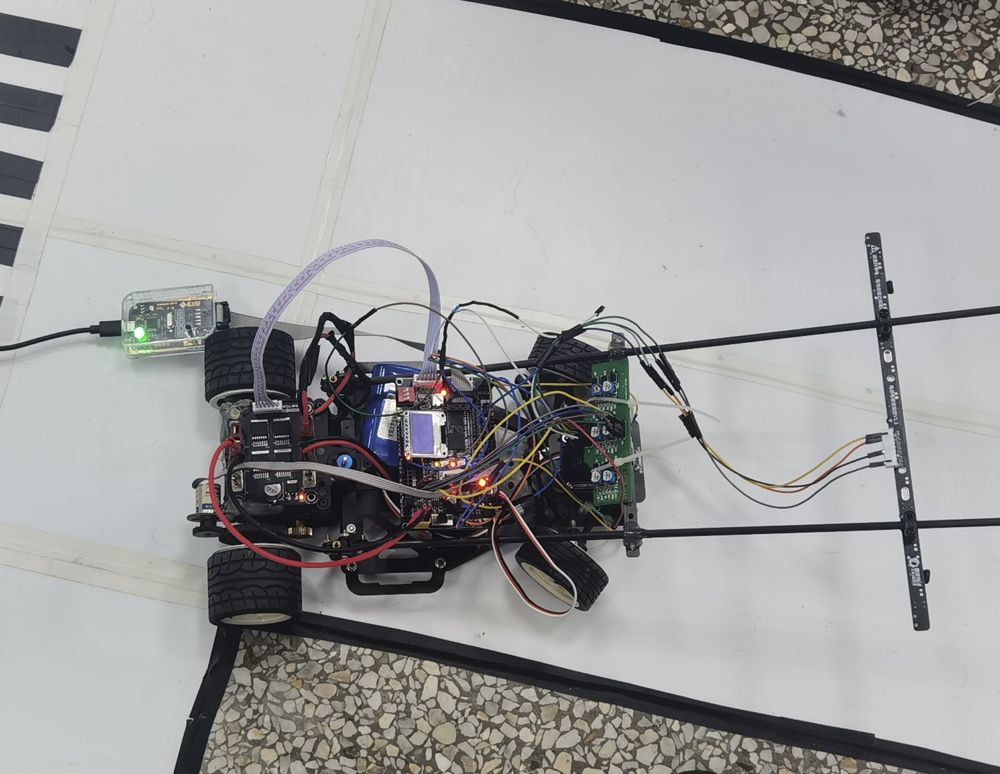
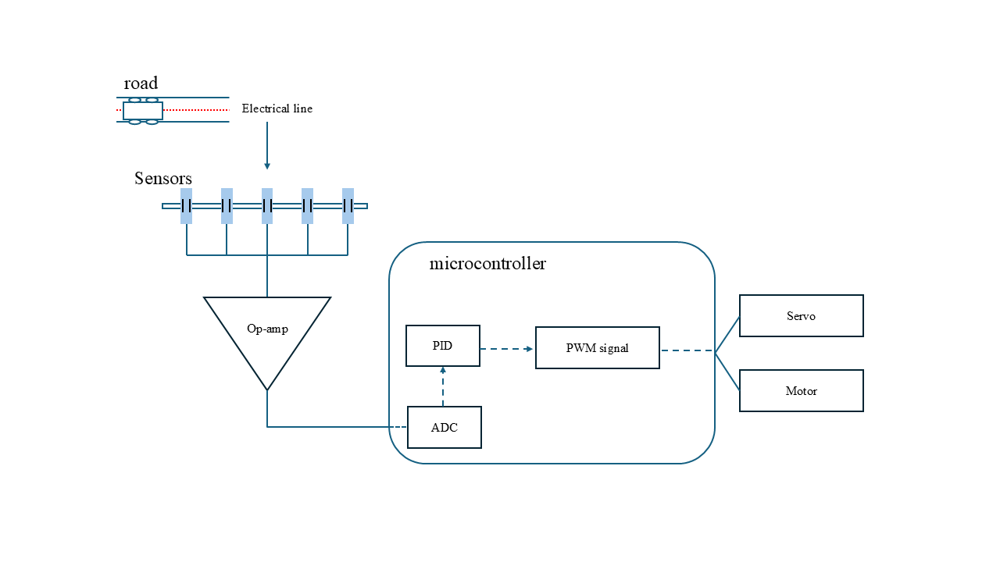
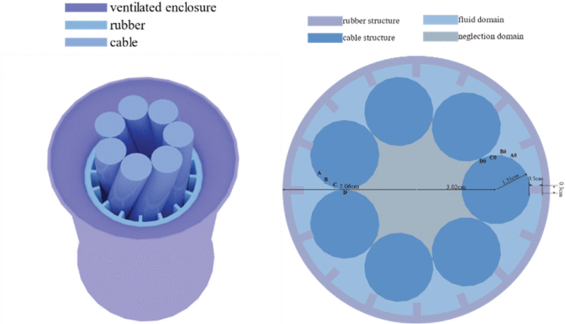

B.Sc. in Electrical Science and Technology
Southeast University, Chien-Shiung Wu College
September 2020 — June 2024 · Nanjing, China
Overview
A new step to the broader world.
Year 1
Flight Fighting Game
Build a flight fighting game using MFC. The single player and multiplayer modes were implemented. I am in charge of the building of the multiplayer model, focusing on the control logics. We defined 2 customer class for the player A and player B to realize the control of different players.
Student Activities
Entered the Chien-Shiung WU College Science Association, so happy to meet many new friends and have the chance to contribute to holding activities.
Year 2
The beginning of the challenging and struggling circuit experiments. If I need to choose something that make composition of my undergraduation period, that would be the endless failure and relearn of the electrical circuits.
Math Competition
Following the interest in mathematics, I participated in the national math competition and won the first prize. Swimming in the sea of mathematics, I found the happiness of exploring something unknown.
Gain Varying Amplifier Experiment

Student Activities
Became the minister of the publicity department of Chien-Shiung Wu College Science Association. Transferring from completling the missions given to me to developing interesting ideas and mission management. For instance, the promotion of the drone interest events with the questionnaire and event preview SNS.
SEU seen from sky

Year 3
With advanced knowledge base, I started to get in touch with some interesting projects with complex system design.
Projects and Achievements

Electromagnetic Car System Building
We built a car system from zero using the electromagnetic signal of the road to judge the road conditions and control the car to move forward, turn left, turn right, and stop.
- Signal Input: The electromagetic signals are detected by conductances and the detected analog signals are converted to digital signals.
- Signal Processing: The digital signals are processed by the microcontroller and the road conditions are determined. The control signal is generated following the PID control algorithms.
- Signal Output: The processed signals are output to the motor and servo to control the car's movement.
- Parameters Debugging: P, I and D parameters are debugged to achieve the best control effect. The trade-off between robustness to envrionment and speed is mainly considered.

Troubleshooting:
The night before competition, our smart car suddenly failed. I methodically isolated the sensor, communication, and power subsystems, traced the fault to damaged wiring, and fixed it in time to compete.
Year 4

Graduate Research: Current Sensor Shell Design and Shape Optimization
The existing current sensor design wraps around the cable, but in rainy conditions, moisture becomes trapped around the cable for extended periods, leading to long-term corrosion.
- Problem Identification: Analyzed the failure mode and traced it to poor natural ventilation in the shell's original geometry, which allowed moisture to accumulate rather than drain or evaporate.
- CFD Simulation: Modeled airflow and moisture behavior around candidate shell geometries to evaluate ventilation performance before physical prototyping.
- Shape Optimization: Applied optimization algorithms to iteratively refine the ventilation channel geometry, balancing improved airflow against manufacturing constraints.
- Outcome: Proposed a redesigned shell with an improved ventilation channel that reduces moisture retention around the cable, mitigating long-term corrosion risk.
- Started from a real-world problem, collaborated with industry partners and other professional departments, and delivered a proposed design through to project completion. Beyond the technical outcome, I found this a valuable experience in navigating a complete project lifecycle from start to finish.
Publication:
This work was accepted as a paper at ICEPG 2024. View paper